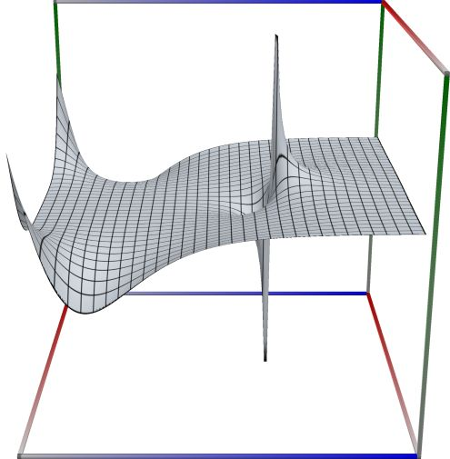
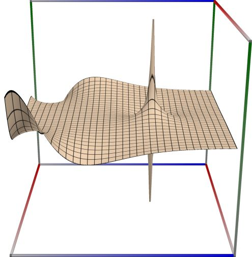
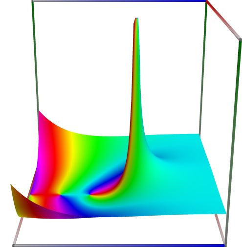
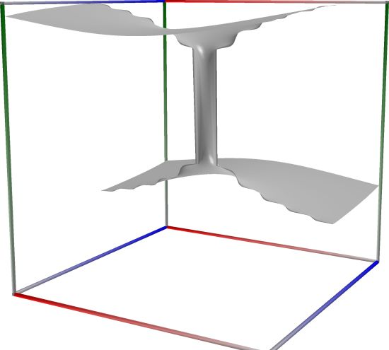
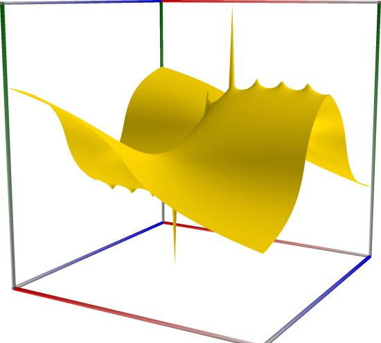
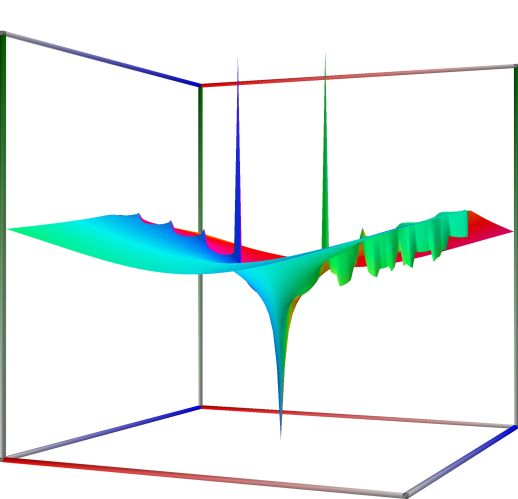
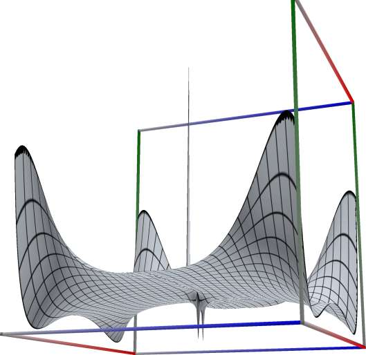
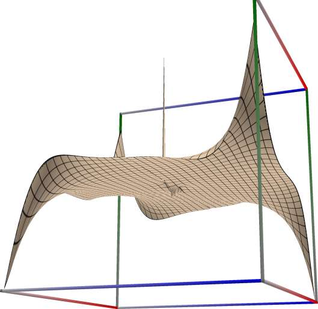
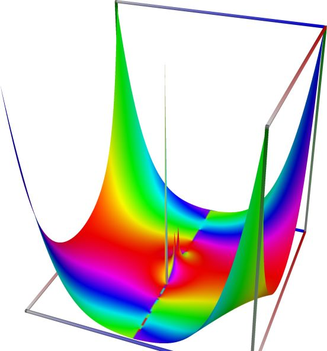

Riemann zeta function, and related functions#
Riemann zeta function, \(\zeta(s)\)#
- ctx.zeta(s)#
where
ctxismath53,mathc53,ctxboostctxflint.Returns the Riemann zeta function, defined as \(\displaystyle \zeta(s) = \sum_{k=1}^{\infty} \frac{1}{k^s}\) for \(s>1\), and by analytic continuation for \(s \ne 1\).
See also Wikipedia [1440], MathWorld [1044], NIST [20], BoostMath [165], Ehrhardt [309] (3.6.1.1), Ehrhardt [309] (4.2.63), Flint [829], Mpmath [693].
This function calculates the Riemann zeta function \(\zeta(s)\) for \(s \neq 1\), defined by
\[\zeta(s) = \sum_{k=1}^\infty \frac{1}{k^s}, \quad s>1.\]If \(s<0\), the reflection formula is used:
\[\zeta(s) = 2(2\pi)^{s-1} \sin\left(\tfrac{1}{2} \pi s\right) \Gamma(1-s) \zeta(1-s)\]
  
{kind=link}
{kind=link}
{kind=link}
Left figure: real part of the Riemann zeta function, \(\zeta(s)\). Camera angles are \(\theta=135^\circ\) and \(\phi = -12^\circ\), camera radius is -2.
Middle figure: imaginary part of the Riemann zeta function, \(\zeta(s)\). Camera angles are \(\theta=135^\circ\) and \(\phi = -12^\circ\), camera radius is -2.
Right figure: absolute value of the Riemann zeta function, \(\zeta(s)\), with color-coded phase. Camera angles are \(\theta=135^\circ\) and \(\phi = -12^\circ\), camera radius is -2.
An example in Python
>>> from xlcalcnet import xreal >>> xreal.Zeta(1.5) xreal('5.2359877559829887307E-1') >>> xreal.Zeta('1.51') xreal('5.3518479027559984754E-1')An example in Visual Basic
>>> from xlcalcnet import Gpr >>> Gpr.Zeta(1.5) Gpr('5.2359877559829887307E-1') >>> Gpr.Zeta('1.51') Gpr('5.3518479027559984754E-1')An example with real input:
>>> from xlcalcnet import dec, mpm, gmp, fpm, apm >>> mpm.dps = 40; x = '1.5' >>> \mathrm{d}x = dec.zeta(x); mx = mpm.zeta(x); gx = gmp.zeta(x) >>> fx = fpm.zeta(x); ax = apm.zeta(x) >>> mpm.show([\mathrm{d}x, mx, gx, fx, ax]) dec: 2.612375348685488343348567567924071630571E+0 mpm: 2.612375348685488343348567567924071630571e+0 gmp: 2.612375348685488343348567567924071630571E+00 fpm: 2.61237534868549E+00 apm: 2.612375348685488343348567567924071630571e+0 (8.789e-40%)An example with complex input:
>>> from xlcalcnet import dec, mpm, gmp, fpm, apm >>> mpm.dps = 20; z = '5.0 + 3j' >>> \mathrm{d}z = dec.zeta(z); mz = mpm.zeta(z); gz = gmp.zeta(z) >>> fz = fpm.zeta(z); az = apm.zeta(z) >>> mpm.show([\mathrm{d}z, mz, gz, fz, az], aligned=True) dec: 9.8042867050578744177E-1 - 2.5411901380637479903E-2j mpm: 9.8042867050578744177e-1 - 2.5411901380637479903e-2j gmp: 9.8042867050578744177E-01 - 2.5411901380637479903E-02j fpm: 9.80428670505787E-01 - 2.54119013806375E-02j apm: 9.8042867050578744177e-1 (4.32e-20%) - 2.5411901380637479903e-2 (-5.208e-20%)j
Riemann \(\zeta(s)-1\)#
- math53.zetam1(s)#
Returns the Riemann function \(\zeta(s)-1\) for \(s \ne 1\). It is provided as separate routine because \(\zeta(s) \rightarrow 1\) for large \(s\), in fact \(\zeta(s) = 1\) to extended precision for \(s \ge 64\). The function returns \(\zeta(s)-1\) for \(s \le 2\), and \(2^{-s}\) if \(s \ge 120\), otherwise the result is computed as \(\displaystyle \zeta(s)-1 = \frac{1+(\eta(s)-1)2^{s-1}}{2^{s-1}-1}\).
See also Wikipedia [1440], MathWorld [1044], NIST [20], BoostMath [165], Ehrhardt [309] (3.6.1.4).
Returns the Riemann zeta function \(\zeta(s)-1\) for \(s \neq 1\). This is calculated using the Hurwitz zeta function (see NIST [18], equation 25.11.3):
\[\zeta(s, 1) - 1 = \zeta(s, 2)\]An example in Python
>>> from xlcalcnet import xreal >>> xreal.Zetam1(12) xreal('5.2359877559829887307E-1') >>> xreal.Zetam1('10.0001') xreal('5.3518479027559984754E-1')
An example in Visual Basic
>>> from xlcalcnet import Gpr >>> Gpr.Zetam1(12) Gpr('5.2359877559829887307E-1') >>> Gpr.Zetam1('10.0001') Gpr('5.3518479027559984754E-1')
An example with real input:
>>> from xlcalcnet import dec, mpm, gmp, fpm, apm >>> mpm.dps = 40; x = '26' >>> \mathrm{d}x = dec.zetam1(x); mx = mpm.zetam1(x); gx = gmp.zetam1(x) >>> fx = fpm.zetam1(x); ax = apm.zetam1(x) >>> mpm.show([\mathrm{d}x, mx, gx, fx, ax]) dec: 1.490155482836504123465850663069862886479E-8 mpm: 1.490155482836504123465850663069862886479e-8 gmp: 1.490155482836504123465850663069862886479E-08 fpm: 1.49015548283650E-08 apm: 1.490155482836504123465850663069862886479e-8 (1.148e-39%)
An example with complex input:
>>> from xlcalcnet import dec, mpm, gmp, fpm, apm >>> mpm.dps = 20; z = '26.0 + 3j' >>> \mathrm{d}z = dec.zetam1(z); mz = mpm.zetam1(z); gz = gmp.zetam1(z) >>> fz = fpm.zetam1(z); az = apm.zetam1(z) >>> mpm.show([\mathrm{d}z, mz, gz, fz, az], aligned=True) dec: -7.2571711804358415550E-9 - 1.3014689280327770930E-8j mpm: -7.2571711804358415550e-9 - 1.3014689280327770930e-8j gmp: -7.2571711804358415550E-09 - 1.3014689280327770930E-08j fpm: -7.25717118043584E-09 - 1.30146892803278E-08j apm: -7.2571711804358415431e-9 (-4.348e-20%) - 1.3014689280327770920e-8 (-9.698e-20%)j
Hardy (or Riemann-Siegel) theta function#
- mathc53.hardy_theta(z)#
Returns the Hardy (or Riemann-Siegel) theta function. See also Wikipedia [1475], MathWorld [1091], Ehrhardt [309] (4.2.52), Mpmath [733] Mpmath [744].
\[\theta(t) = \frac{ \log\Gamma\left(\frac{1+2it}{4}\right) - \log\Gamma\left(\frac{1-2it}{4}\right) }{2i} - \frac{\log \pi}{2} t.\]
  
{kind=link}
{kind=link}
{kind=link}
Left figure: real part of the Hardy (or Riemann-Siegel) theta function. Camera angles are \(\theta=135^\circ\) and \(\phi = -12^\circ\), camera radius is -2.
Middle figure: imaginary part of the Hardy (or Riemann-Siegel) theta function. Camera angles are \(\theta=135^\circ\) and \(\phi = -12^\circ\), camera radius is -2.
Right figure: absolute value of the Hardy (or Riemann-Siegel) theta function, with color-coded phase. Camera angles are \(\theta=135^\circ\) and \(\phi = -12^\circ\), camera radius is -2.
An example in Python
>>> from xlcalcnet import XComplex >>> XComplex.Rstheta(0.5) XComplex('5.2359877559829887307E-1') >>> XComplex.Rstheta('0.1') XComplex('5.3518479027559984754E-1')An example in Visual Basic
>>> from xlcalcnet import Gpc >>> Gpc.Rstheta(0.5) Gpc('5.2359877559829887307E-1') >>> Gpc.Rstheta('0.1') Gpc('5.3518479027559984754E-1')
Hardy (or Riemann-Siegel) Z function#
- mathc53.hardy_z(z)#
Returns the Hardy (or Riemann-Siegel) Z function. See also Wikipedia [1474], MathWorld [1092], NIST [14], Flint [833], Ehrhardt [309] (4.2.52), Mpmath [743].
\[Z(t) = e^{i \theta(t)} \zeta(1/2+it)\]where \(\zeta(s)\) is the Riemann zeta function and \(\theta(t)\) denotes the Riemann-Siegel theta function.
This calls
acb_dirichlet_hardy_z.Computes the Z-function, also known as the Riemann-Siegel Z function,
\[Z(t) = e^{i \theta(t)} \zeta(1/2+it)\]where \(\zeta(s)\) is the Riemann zeta function (zeta()) and where \(\theta(t)\) denotes the Riemann-Siegel theta function (see siegeltheta()).
  
{kind=link}
{kind=link}
{kind=link}
Left figure: real part of the Hardy (or Riemann-Siegel) Z function. Camera angles are \(\theta=135^\circ\) and \(\phi = -12^\circ\), camera radius is -2.
Middle figure: imaginary part of the Hardy (or Riemann-Siegel) Z function. Camera angles are \(\theta=135^\circ\) and \(\phi = -12^\circ\), camera radius is -2.
Right figure: absolute value of the Hardy (or Riemann-Siegel) Z function, with color-coded phase. Camera angles are \(\theta=135^\circ\) and \(\phi = -12^\circ\), camera radius is -2.
An example in Python
>>> from xlcalcnet import XComplex >>> XComplex.SiegelZ(0.5) XComplex('5.2359877559829887307E-1') >>> XComplex.SiegelZ('0.1') XComplex('5.3518479027559984754E-1')An example in Visual Basic
>>> from xlcalcnet import Gpc >>> Gpc.SiegelZ(0.5) Gpc('5.2359877559829887307E-1') >>> Gpc.SiegelZ('0.1') Gpc('5.3518479027559984754E-1')An example with real input:
>>> from xlcalcnet import dec, mpm, gmp, fpm, apm >>> mpm.dps = 40; x = '2.6' >>> \mathrm{d}x = dec.siegelz(x); mx = mpm.siegelz(x); gx = gmp.siegelz(x) >>> fx = fpm.siegelz(x); ax = apm.siegelz(x) >>> mpm.show([\mathrm{d}x, mx, gx, fx, ax]) dec: -5.270127547934236224731698070416108808706E-1 mpm: -5.270127547934236224731698070416108808706e-1 gmp: -5.270127547934236224731698070416108808706E-01 fpm: -5.27012754793424E-01 apm: -5.270127547934236224731698070416108808706e-1 (-1.002e-37%)An example with complex input:
>>> from xlcalcnet import dec, mpm, gmp, fpm, apm >>> mpm.dps = 20; z = '2.6 + 3j' >>> \mathrm{d}z = dec.siegelz(z); mz = mpm.siegelz(z); gz = gmp.siegelz(z) >>> fz = fpm.siegelz(z); az = apm.siegelz(z) >>> mpm.show([\mathrm{d}z, mz, gz, fz, az], aligned=True) dec: -2.8270067277806269605E-1 - 1.6028967412508714310E-1j mpm: -2.8270067277806269605e-1 - 1.6028967412508714310e-1j gmp: -2.8270067277806269605E-01 - 1.6028967412508714310E-01j fpm: -2.82700672778063E-01 - 1.60289674125087E-01j apm: -2.8270067277806269605e-1 (-2.097e-18%) - 1.6028967412508714310e-1 (-4.228e-18%)j
Riemann (Landau) function \(\xi(s)\)#
- ctxflint.riemann_xi(s)#
Returns the Riemann (Landau) function \(\xi(s)\). See also MathWorld [1089], Wikipedia [1461], Flint [828].
Landau’s lower-case \(\xi\) (“xi”) is defined as
\[\xi (s)={\frac {1}{2}}s(s-1)\pi ^{-s/2}\Gamma \left({\frac {s}{2}}\right)\zeta (s)\]for \(s\in \mathbb {C}\). Here \(\zeta (s)\) denotes the Riemann zeta function and \(\Gamma (s)\) is the Gamma function. The functional equation (or reflection formula) for Landau’s \(\xi\) is
\[\xi (1-s)=\xi (s)\]An example with real input:
>>> from xlcalcnet import dec, mpm, gmp, fpm, apm >>> mpm.dps = 40; x = '2.6' >>> \mathrm{d}x = dec.riemann_xi(x); mx = mpm.riemann_xi(x); gx = gmp.riemann_xi(x) >>> fx = fpm.riemann_xi(x); ax = apm.riemann_xi(x) >>> mpm.show([\mathrm{d}x, mx, gx, fx, ax]) dec: 5.502477451681679934572096474654698087218E-1 mpm: 5.502477451681679934572096474654698087218e-1 gmp: 5.502477451681679934572096474654698087218E-01 fpm: 5.50247745168168E-01 apm: 5.502477451681679934572096474654698087218e-1 (1.46e-38%)
An example with complex input:
>>> from xlcalcnet import dec, mpm, gmp, fpm, apm >>> mpm.dps = 20; z = '2.6 + 3j' >>> \mathrm{d}z = dec.riemann_xi(z); mz = mpm.riemann_xi(z); gz = gmp.riemann_xi(z) >>> fz = fpm.riemann_xi(z); az = apm.riemann_xi(z) >>> mpm.show([\mathrm{d}z, mz, gz, fz, az], aligned=True) dec: 4.2915713107054790438E-1 + 1.2956749025413144593E-1j mpm: 4.2915713107054790438e-1 + 1.2956749025413144593e-1j gmp: 4.2915713107054790438E-01 + 1.2956749025413144593E-01j fpm: 4.29157131070548E-01 + 1.29567490254131E-01j apm: 4.2915713107054790437e-1 (1.974e-18%) + 1.2956749025413144593e-1 (6.537e-18%)j
Dirichlet eta function, \(\eta(s)\)#
- math53.dirichlet_eta(x)#
Returns the Dirichlet eta function, defined as \(\displaystyle \eta(s) = \sum_{k=0}^{\infty} \frac{(-1)^k}{k^s}\) for \(s>0\) and by analytic continuation for \(s \le 0\).
See also: MathWorld [1071], Ehrhardt [309] (3.6.3.1), Flint [828], Mpmath [735].
This function returns the Dirichlet function \(\eta(s)\), also known as the alternating zeta function, defined for \(s > 0\) as
\[\eta(s) = \sum_{n=1}^\infty \frac{(-1)^{n-1}}{n^s}\]and by analytic continuation for \(s \leq 0\). The important relation to the Riemann zeta function is \(\eta(s) = (1 - 2^{1-s})\zeta(s)\), which is directly evaluated for \(s \leq -8\). In the range \(-8 < s < -\eta_\epsilon\) the reflection formula for \(\eta\) is used:
\[\eta(s) = \frac{2(1-2^{1-s} \Gamma(1-s) \cos\left(\tfrac{1}{2}\pi(1-s)\right)}{(1-s^s)(2\pi)^{1-s}} \eta (1-s).\]An example in Python
>>> from xlcalcnet import xreal >>> xreal.DirichletEta(12) xreal('5.2359877559829887307E-1') >>> xreal.DirichletEta('10.0001') xreal('5.3518479027559984754E-1')
An example in Visual Basic
>>> from xlcalcnet import Gpr >>> Gpr.DirichletEta(12) Gpr('5.2359877559829887307E-1') >>> Gpr.DirichletEta('10.0001') Gpr('5.3518479027559984754E-1')
An example with real input:
>>> from xlcalcnet import dec, mpm, gmp, fpm, apm >>> mpm.dps = 40; x = '2.6' >>> \mathrm{d}x = dec.dirichlet_eta(x); mx = mpm.dirichlet_eta(x); gx = gmp.dirichlet_eta(x) >>> fx = fpm.dirichlet_eta(x); ax = apm.dirichlet_eta(x) >>> mpm.show([\mathrm{d}x, mx, gx, fx, ax]) dec: 8.748307349702805779574670518491745461882E-1 mpm: 8.748307349702805779574670518491745461882e-1 gmp: 8.748307349702805779574670518491745461882E-01 fpm: 8.74830734970281E-01 apm: 8.748307349702805779574670518491745461882e-1 (1.968e-39%)
An example with complex input:
>>> from xlcalcnet import dec, mpm, gmp, fpm, apm >>> mpm.dps = 20; z = '2.6 + 3j' >>> \mathrm{d}z = dec.dirichlet_eta(z); mz = mpm.dirichlet_eta(z); gz = gmp.dirichlet_eta(z) >>> fz = fpm.dirichlet_eta(z); az = apm.dirichlet_eta(z) >>> mpm.show([\mathrm{d}z, mz, gz, fz, az], aligned=True) dec: 1.0368930023009351181E+0 + 1.3961421241509646940E-1j mpm: 1.0368930023009351181e+0 + 1.3961421241509646940e-1j gmp: 1.0368930023009351181E+00 + 1.3961421241509646940E-01j fpm: 1.03689300230094E+00 + 1.39614212415096E-01j apm: 1.0368930023009351181e+0 (1.634e-19%) + 1.3961421241509646940e-1 (6.825e-19%)j
Dirichlet \(\eta(s) - 1\)#
- math53.dirichlet_eta_m1(s)#
Returns the Dirichlet function \(\eta(s)-1\). It is provided as separate routine because \(\eta(s) \rightarrow 1\) for large \(s\), in fact \(\zeta(s) = 1\) to extended precision for \(s \ge 65\). The function returns \(\eta(s)-1\) for \(s \le -10^{-9}\), and otherwise the result is computed as \(\displaystyle \eta(s)-1 = \sum_{k=2}^{\infty} \frac{(-1)^k}{k^s}\).
See also: MathWorld [1071], Ehrhardt [309] (3.6.3.3).
Returns the Dirichlet function \(\eta(s) - 1 = (\zeta(s)-1) - (2^{1-s} \zeta(s))\).
An example in Python
>>> from xlcalcnet import xreal >>> xreal.DirichletEtam1(5) xreal('5.2359877559829887307E-1') >>> xreal.DirichletEtam1('51') xreal('5.3518479027559984754E-1')
An example in Visual Basic
>>> from xlcalcnet import Gpr >>> Gpr.DirichletEtam1(5) Gpr('5.2359877559829887307E-1') >>> Gpr.DirichletEtam1('51') Gpr('5.3518479027559984754E-1')
An example with real input:
>>> from xlcalcnet import dec, mpm, gmp, fpm, apm >>> mpm.dps = 40; x = '2.6' >>> \mathrm{d}x = dec.etam1(x); mx = mpm.etam1(x); gx = gmp.etam1(x) >>> fx = fpm.etam1(x); ax = apm.etam1(x) >>> mpm.show([\mathrm{d}x, mx, gx, fx, ax]) dec: -1.251692650297194220425329481508254538118E-1 mpm: -1.251692650297194220425329481508254538118e-1 gmp: -1.251692650297194220425329481508254538118E-01 fpm: -1.25169265029719E-01 apm: -1.251692650297194220425329481508254538118e-1 (-1.376e-38%)
An example with complex input:
>>> from xlcalcnet import dec, mpm, gmp, fpm, apm >>> mpm.dps = 20; z = '2.6 + 3j' >>> \mathrm{d}z = dec.etam1(z); mz = mpm.etam1(z); gz = gmp.etam1(z) >>> fz = fpm.etam1(z); az = apm.etam1(z) >>> mpm.show([\mathrm{d}z, mz, gz, fz, az], aligned=True) dec: 3.6893002300935118091E-2 + 1.3961421241509646940E-1j mpm: 3.6893002300935118091e-2 + 1.3961421241509646940e-1j gmp: 3.6893002300935118091E-02 + 1.3961421241509646940E-01j fpm: 3.68930023009351E-02 + 1.39614212415096E-01j apm: 3.6893002300935118089e-2 (4.592e-18%) + 1.3961421241509646940e-1 (6.825e-19%)j
Dirichlet beta function, \(\beta(s)\)#
- math53.dirichlet_beta(s)#
Returns the Dirichlet beta function, defined as \(\displaystyle \beta(s) = \sum_{n=0}^{\infty} \frac{(-1)^n}{(2n+1)^s}\), for \(s>0\), and by analytic continuation for \(s \le 0\).
See also: Wikipedia [1448], MathWorld [1049], Ehrhardt [309] (3.6.4).
This function returns the Dirichlet function \(\beta(s)\), defined for \(s > 0\) as
\[\beta(s) = \sum_{n=1}^\infty \frac{(-1)^{n}}{(2n+1)^s}\]Alternatively, the following definition, in terms of the Hurwitz zeta function, is valid in the whole complex s-plane:
\[\beta (s)=4^{-s}\left(\zeta \left(s,{1 \over 4}\right)-\zeta \left(s,{3 \over 4}\right)\right).\]An example in Python
>>> from xlcalcnet import xreal >>> xreal.DirichletBeta(5) xreal('5.2359877559829887307E-1') >>> xreal.DirichletBeta('51') xreal('5.3518479027559984754E-1')
An example in Visual Basic
>>> from xlcalcnet import Gpr >>> Gpr.DirichletBeta(5) Gpr('5.2359877559829887307E-1') >>> Gpr.DirichletBeta('51') Gpr('5.3518479027559984754E-1')
An example with real input:
>>> from xlcalcnet import dec, mpm, gmp, fpm, apm >>> mpm.dps = 40; x = '2.6' >>> \mathrm{d}x = dec.dirichlet_beta(x); mx = mpm.dirichlet_beta(x); gx = gmp.dirichlet_beta(x) >>> fx = fpm.dirichlet_beta(x); ax = apm.dirichlet_beta(x) >>> mpm.show([\mathrm{d}x, mx, gx, fx, ax]) dec: 9.535048662378325267539346079940401993601E-1 mpm: 9.535048662378325267539346079940401993601e-1 gmp: 9.535048662378325267539346079940401993601E-01 fpm: 9.53504866237832E-01 apm: 9.535048662378325267539346079940401993601e-1 (1.084e-38%)
An example with complex input:
>>> from xlcalcnet import dec, mpm, gmp, fpm, apm >>> mpm.dps = 20; z = '2.6 + 3j' >>> \mathrm{d}z = dec.dirichlet_beta(z); mz = mpm.dirichlet_beta(z); gz = gmp.dirichlet_beta(z) >>> fz = fpm.dirichlet_beta(z); az = apm.dirichlet_beta(z) >>> mpm.show([\mathrm{d}z, mz, gz, fz, az], aligned=True) dec: 1.0550279685803642739E+0 + 3.3718823063670455627E-3j mpm: 1.0550279685803642739e+0 + 3.3718823063670455627e-3j gmp: 1.0550279685803642739E+00 + 3.3718823063670455627E-03j fpm: 1.05502796858036E+00 + 3.37188230636704E-03j apm: 1.0550279685803642739e+0 (7.226e-19%) + 3.3718823063670455625e-3 (1.828e-16%)j
Dirichlet lambda function, \(\lambda(s)\)#
- math53.dirichlet_lambda(s)#
Returns the Dirichlet lambda function, defined as \(\displaystyle \lambda(s) = \sum_{n=0}^{\infty} (2n+1)^{-s} = (1-2^{-s}) \zeta(s) = -\mathrm{exp2m1}(-s) \zeta(s)\), for \(s>1\), and by analytic continuation for \(s < 1\).
See also: MathWorld [1073], Ehrhardt [309] (3.6.5), Hu and Kim [394].
This function returns the Dirichlet function \(\lambda(s)\), defined for \(s > 0\) as
\[\lambda(s) = \sum_{n=0}^\infty (2n+1)^{-s}\]and by analytic continuation for \(s<1\). The function is calculated as
\[\lambda(s) = (1-2^{-s}) \zeta(s) = -\text{exp2m1}(-s) \zeta(s)\]An example in Python
>>> from xlcalcnet import xreal >>> xreal.DirichletLambda(5) xreal('5.2359877559829887307E-1') >>> xreal.DirichletLambda('51') xreal('5.3518479027559984754E-1')
An example in Visual Basic
>>> from xlcalcnet import Gpr >>> Gpr.DirichletLambda(5) Gpr('5.2359877559829887307E-1') >>> Gpr.DirichletLambda('51') Gpr('5.3518479027559984754E-1')
An example with real input:
>>> from xlcalcnet import dec, mpm, gmp, fpm, apm >>> mpm.dps = 40; x = '2.6' >>> \mathrm{d}x = dec.dirichlet_lambda(x); mx = mpm.dirichlet_lambda(x); gx = gmp.dirichlet_lambda(x) >>> fx = fpm.dirichlet_lambda(x); ax = apm.dirichlet_lambda(x) >>> mpm.show([\mathrm{d}x, mx, gx, fx, ax]) dec: 1.090154272021530585919018418830832116026E+0 mpm: 1.090154272021530585919018418830832116026e+0 gmp: 1.090154272021530585919018418830832116026E+00 fpm: 1.09015427202153E+00 apm: 1.090154272021530585919018418830832116056e+0 (2.815e-36%)
An example with complex input:
>>> from xlcalcnet import dec, mpm, gmp, fpm, apm >>> mpm.dps = 20; z = '2.6 + 3j' >>> \mathrm{d}z = dec.dirichlet_lambda(z); mz = mpm.dirichlet_lambda(z); gz = gmp.dirichlet_lambda(z) >>> fz = fpm.dirichlet_lambda(z); az = apm.dirichlet_lambda(z) >>> mpm.show([\mathrm{d}z, mz, gz, fz, az], aligned=True) dec: 9.5326918762855854694E-1 + 2.2012809770791952023E-2j mpm: 9.5326918762855854694e-1 + 2.2012809770791952023e-2j gmp: 9.5326918762855854694E-01 + 2.2012809770791952023E-02j fpm: 9.53269187628559E-01 + 2.20128097707919E-02j apm: 9.5326918762855854695e-1 (7.108e-19%) + 2.2012809770791952017e-2 (1.972e-17%)j
Zeros of the Riemann zeta function#
- ctxflint.zeta_zero(n)#
Returns the zeros of the Riemann zeta function. See also Wikipedia [1473], MathWorld [1090], NIST [15], Mpmath [749].
This calls
acb_dirichlet_zeta_zero.Computes the \(n\)-th nontrivial zero of \(\zeta(s)\) on the critical line, i.e. returns an approximation of the \(n\)-th largest complex number \(s = \frac{1}{2} + ti\) for which \(\zeta(s) = 0\). Equivalently, the imaginary part \(t\) is a zero of the Z-function (siegelz()).
An example :
>>> from xlcalcnet import dec, mpm, gmp, fpm, apm >>> mpm.dps = 20; n = '20' >>> \mathrm{d}z = dec.zetazero(n); mz = mpm.zetazero(n); gz = gmp.zetazero(n) >>> fz = fpm.zetazero(n); az = apm.zetazero(n) >>> mpm.show([\mathrm{d}z, mz, gz, fz, az], aligned=True) dec: 5.0000000000000000000E-1 + 7.7144840068874805373E+1j mpm: 5.0000000000000000000e-1 + 7.7144840068874805373e+1j gmp: 5.0000000000000000000E-01 + 7.7144840068874805373E+01j fpm: 5.00000000000000E-01 + 7.71448400688748E+01j apm: 5.0000000000000000000e-1 (0.0%) + 7.7144840068874805373e+1 (7.027e-20%)j